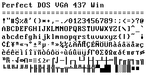
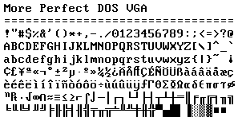
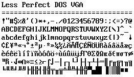

Fonts
More and Less Perfect DOS VGA

Zeh Fernando made Perfect DOS VGA 437 back in 2003, and it is almost the best TrueType VGA font out there. To my eye it looks a bit too spaced-out horizontally; this is for a couple of reasons. I made the following alterations to his font to address them.
First, while his font is done on a proper 9x16 pixel matrix (VGA characters are stored as 8x16 matrices in ROM, but the adapter displays them in a padded 9x16 cell), none of his alphanumeric glyphs are more than 7 pixels wide, which is not as it should be. For More Perfect DOS VGA I fixed the capitals T and Z, both cases of M, V, X, and W, the zero, the ligatured AE, and a few other glyphs to better match IBM’s VGA ROM font. The result of this is that some glyphs lie a little closer to one another, which makes text look a little less spread-out.

The other reason things look spread-out is because they just are. Default VGA text mode is 720x400 pixels, and on a CRT monitor that would have filled a display area with an aspect ratio of roughly 3:4. Those are non-square pixels. Nowadays all of our displays have square pixels, though – so if you display a pixel-perfect VGA ROM font on modern displays, it's stretched-out horizontally1.
An aesthetic remedy to this is just to kern the TrueType font one “pixel” narrower, and that’s what I did for Less Perfect DOS VGA. I left Zeh’s glyphs as he made them and just narrowed the width of the font definition. The result is more tightly packed, less perfect, but nicer as a screen font.

Zeh made Perfect DOS VGA 437 for a Flash ANSI viewer, so his font is available in code page 437 (DOS) and Windows encodings. I don’t care about viewing ANSI graphics, and I’m lazy, so there are no code page 437 versions of Less and More.
Downloads
- More Perfect DOS VGA (.ttf, ~80k)
- Less Perfect DOS VGA (.ttf, ~80k)
License
More Perfect DOS VGA and Less Perfect DOS VGA are both free for all use, commercial and non-commercial. IBM designed the glyphs and Zeh Fernando did most of the work converting them to TrueType, so I don't claim ownership of anything.
If you use either of the fonts in a project, I'd love to hear about it, and I'd be happy to put a hyperlink to your project on this page if you send me a note.
1. To my knowledge, the best emulation of VGA fonts – that is, the best emulation of their visible geometry as it appeared on original hardware – is Arto Hatanpää’s Nouveau IBM Stretch.